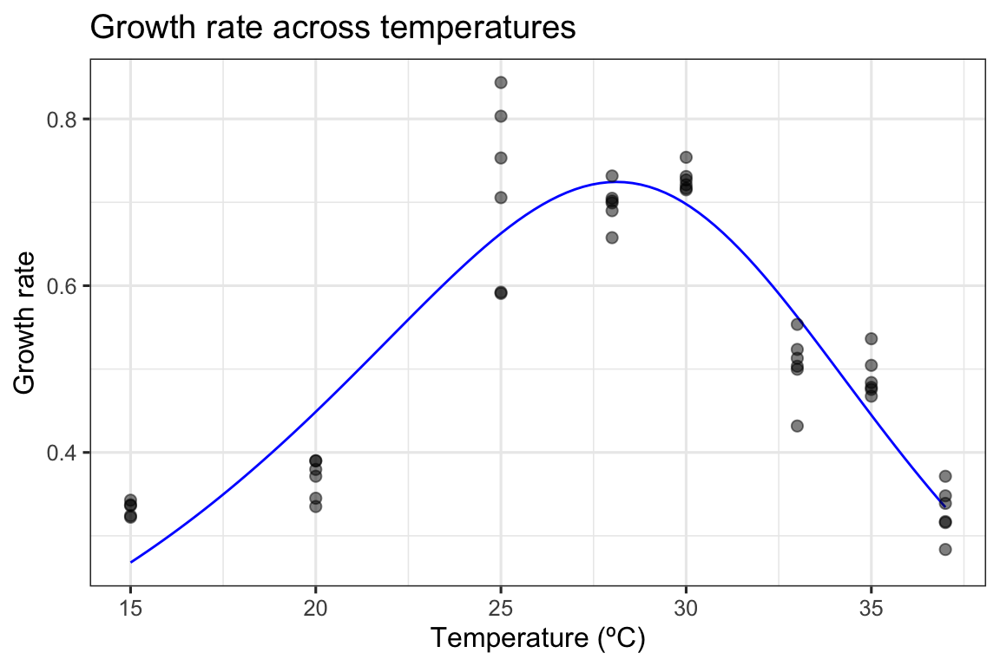
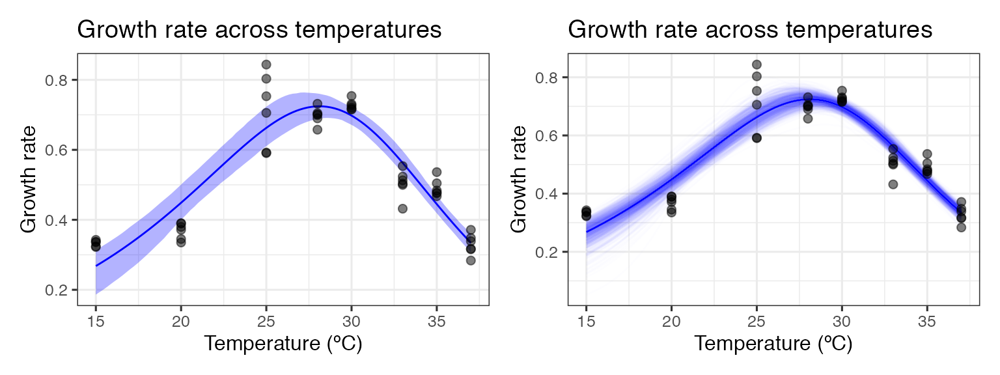
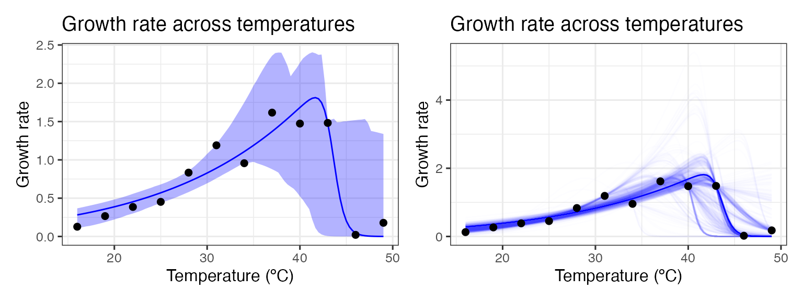
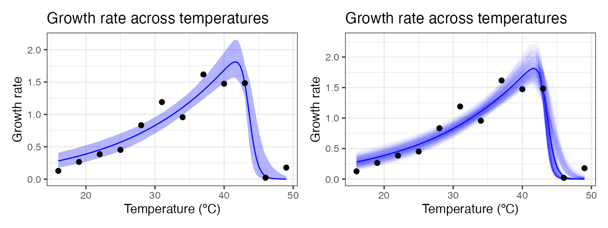
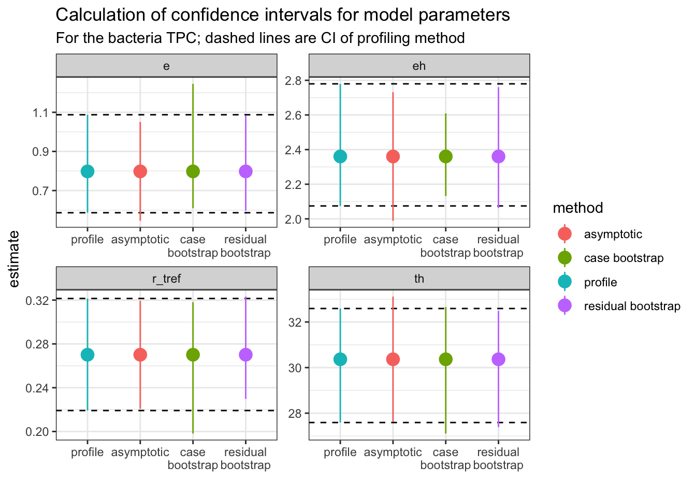
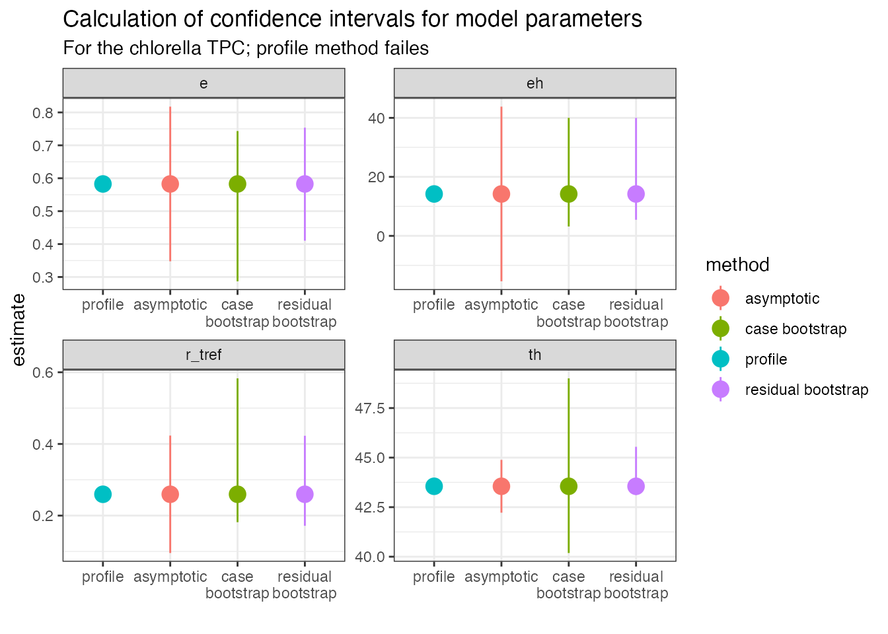
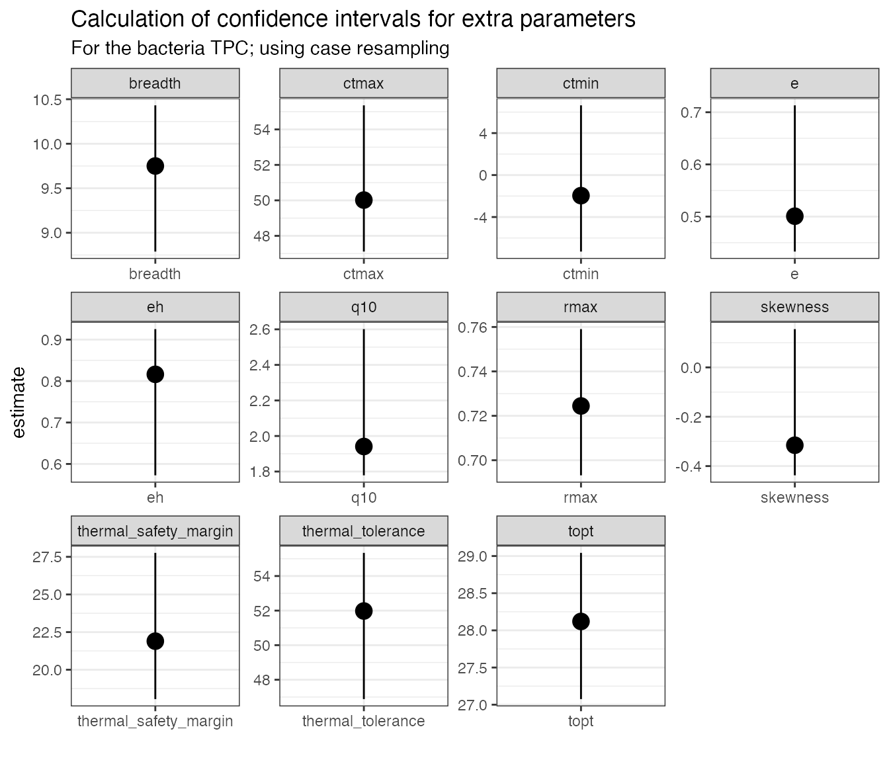

Bootstrapping using rTPC
Daniel Padfield
2020-09-03
Source:vignettes/bootstrapping_models.Rmd
bootstrapping_models.RmdA brief example of how bootstrapping can help visualise and estimate model uncertainty when fitting models to TPCs using rTPC, nls.multstart, car and the tidyverse.
Things to consider
- Confidence intervals of model predictions can be produced for non-linear least squares regression models using bootstrapping.
- Bootstrapping can also allow differences between explicitly modelled and calculated parameters to be evaluated.
- Case resampling involves resampling the actual data with replacement and then refitting the model to the new, simulated datasets.
- When there are fewer data points-per-curve, re-sampling the whole dataset with replacement may result in some re-sampled datasets not having any points beyond the optimum temperature.
- In these instances, residual sampling - creating new datasets from mean centred residuals of the original model fit - provides an alternative to case resampling.
- Both resampling methods will be sensitive to the number of unique data points and the model being used.
Case resampling: Resampling the original data with replacement
Bootstrapping involves simulating “new” datasets produced from the existing data by sampling with replacement. The same model is then fitted separately on each individual bootstrapped dataset. Doing this over and over allows us to visualise uncertainty of predictions and produce confidence intervals of estimated parameters.
First, we will demonstrate this case resampling approach using data from a recent paper by Padfield et al. (2020), that measures the thermal performance of the bacteria, Pseudomonas fluorescens, in the presence and absence of its phage, \(\phi 2\). In this study, each single growth rate estimate is a technical replicate, coming from an isogenic strain of bacteria either inoculated with, or without, the phage. As such, all the data points within each phage treatment can be used to estimate the same curve. This becomes obvious as there is no rep column as in the chlorella_tpc dataset, but we can visualise one of the curves (bacteria in the absence of phage), using ggplot2.
# load in data data("bacteria_tpc") # keep just a single curve d <- filter(bacteria_tpc, phage == 'nophage') # show the data ggplot(d, aes(temp, rate)) + geom_point(size = 2, alpha = 0.5) + theme_bw(base_size = 12) + labs(x = 'Temperature (ºC)', y = 'Growth rate', title = 'Growth rate across temperatures')

As in the study, we can fit the Sharpe-Schoolfield model to the data and plot the predictions using the approaches in vignette(rTPC) and vignette(fit_many_models).
# fit Sharpe-Schoolfield model d_fit <- nest(d, data = c(temp, rate)) %>% mutate(sharpeschoolhigh = map(data, ~nls_multstart(rate~sharpeschoolhigh_1981(temp = temp, r_tref,e,eh,th, tref = 15), data = .x, iter = c(3,3,3,3), start_lower = get_start_vals(.x$temp, .x$rate, model_name = 'sharpeschoolhigh_1981') - 10, start_upper = get_start_vals(.x$temp, .x$rate, model_name = 'sharpeschoolhigh_1981') + 10, lower = get_lower_lims(.x$temp, .x$rate, model_name = 'sharpeschoolhigh_1981'), upper = get_upper_lims(.x$temp, .x$rate, model_name = 'sharpeschoolhigh_1981'), supp_errors = 'Y', convergence_count = FALSE)), # create new temperature data new_data = map(data, ~tibble(temp = seq(min(.x$temp), max(.x$temp), length.out = 100))), # predict over that data, preds = map2(sharpeschoolhigh, new_data, ~augment(.x, newdata = .y))) # unnest predictions d_preds <- select(d_fit, preds) %>% unnest(preds) # plot data and predictions ggplot() + geom_line(aes(temp, .fitted), d_preds, col = 'blue') + geom_point(aes(temp, rate), d, size = 2, alpha = 0.5) + theme_bw(base_size = 12) + labs(x = 'Temperature (ºC)', y = 'Growth rate', title = 'Growth rate across temperatures')
 Here we have the best fit to the data. If we want confidence bands around this prediction, we can get those by resampling the data a number of times. The R package car has the function Boot that provides a wrapper for the widely used function boot::boot() that is tailored to bootstrapping regression models.
_nls_multstart()__ is designed to fit models across a wide possible parameter space, but because of it samples multiple start parameters for each model, using it with bootstrapping becomes computationally expensive. Instead, we refit the model using minpack.lm::nlsLM() and pass the coefficients from the previous model fit to be start values. The Boot function then refits the model 999 times and stores the model coefficients.
# refit model using nlsLM fit_nlsLM <- minpack.lm::nlsLM(rate~sharpeschoolhigh_1981(temp = temp, r_tref,e,eh,th, tref = 15), data = d, start = coef(d_fit$sharpeschoolhigh[[1]]), lower = get_lower_lims(d$temp, d$rate, model_name = 'sharpeschoolhigh_1981'), upper = get_upper_lims(d$temp, d$rate, model_name = 'sharpeschoolhigh_1981')) # bootstrap using case resampling boot1 <- Boot(fit_nlsLM, method = 'case') # look at the data head(boot1$t) #> r_tref e eh th #> [1,] 0.2768424 0.6346997 2.600919 32.50854 #> [2,] 0.2886270 0.6895516 2.388658 31.36959 #> [3,] 0.2304775 1.0837795 2.377578 27.85005 #> [4,] 0.2211972 0.9318925 2.424346 29.75261 #> [5,] 0.2607113 0.8316133 2.418882 30.24069 #> [6,] 0.2564411 0.8869014 2.400021 29.73173
The parameters of each bootstrapped refit are returned. We can easily create predictions for each of these models and then create confidence intervals around the original fitted predictions. We can then plot both some of the bootstrapped fits and the confidence regions around the model predictions.
# create predictions of each bootstrapped model boot1_preds <- boot1$t %>% as.data.frame() %>% drop_na() %>% mutate(iter = 1:n()) %>% group_by_all() %>% do(data.frame(temp = seq(min(d$temp), max(d$temp), length.out = 100))) %>% ungroup() %>% mutate(pred = sharpeschoolhigh_1981(temp, r_tref, e, eh, th, tref = 15)) # calculate bootstrapped confidence intervals boot1_conf_preds <- group_by(boot1_preds, temp) %>% summarise(conf_lower = quantile(pred, 0.025), conf_upper = quantile(pred, 0.975)) %>% ungroup() # plot bootstrapped CIs p1 <- ggplot() + geom_line(aes(temp, .fitted), d_preds, col = 'blue') + geom_ribbon(aes(temp, ymin = conf_lower, ymax = conf_upper), boot1_conf_preds, fill = 'blue', alpha = 0.3) + geom_point(aes(temp, rate), d, size = 2, alpha = 0.5) + theme_bw(base_size = 12) + labs(x = 'Temperature (ºC)', y = 'Growth rate', title = 'Growth rate across temperatures') # plot bootstrapped predictions p2 <- ggplot() + geom_line(aes(temp, .fitted), d_preds, col = 'blue') + geom_line(aes(temp, pred, group = iter), boot1_preds, col = 'blue', alpha = 0.007) + geom_point(aes(temp, rate), d, size = 2, alpha = 0.5) + theme_bw(base_size = 12) + labs(x = 'Temperature (ºC)', y = 'Growth rate', title = 'Growth rate across temperatures') p1 + p2

When there are many points beyond the optimum temperature and multiple points at each temperature, this method allows us to better quantify the uncertainty of out model fit.
This method becomes more problematic when there is a small sample size. It is common for thermal performance curves to have only one or two measurements beyond the optimum temperature. This means that many of the bootstrapped models will not have any points beyond the optimum, which is problematic for mathematical models that expect a unimodal shape. The effect of this can be seen by case resampling a curve from the chlorella_tpc dataset used throughout these vignettes. Here we again fit the model using nls_multstart(), refit the model using nlsLM(), then bootstrap the model using Boot().
# load in chlorella data data('chlorella_tpc') d2 <- filter(chlorella_tpc, curve_id == 1) # fit Sharpe-Schoolfield model to raw data d_fit <- nest(d2, data = c(temp, rate)) %>% mutate(sharpeschoolhigh = map(data, ~nls_multstart(rate~sharpeschoolhigh_1981(temp = temp, r_tref,e,eh,th, tref = 15), data = .x, iter = c(3,3,3,3), start_lower = get_start_vals(.x$temp, .x$rate, model_name = 'sharpeschoolhigh_1981') - 10, start_upper = get_start_vals(.x$temp, .x$rate, model_name = 'sharpeschoolhigh_1981') + 10, lower = get_lower_lims(.x$temp, .x$rate, model_name = 'sharpeschoolhigh_1981'), upper = get_upper_lims(.x$temp, .x$rate, model_name = 'sharpeschoolhigh_1981'), supp_errors = 'Y', convergence_count = FALSE)), # create new temperature data new_data = map(data, ~tibble(temp = seq(min(.x$temp), max(.x$temp), length.out = 100))), # predict over that data, preds = map2(sharpeschoolhigh, new_data, ~augment(.x, newdata = .y))) # refit model using nlsLM fit_nlsLM2 <- nlsLM(rate~sharpeschoolhigh_1981(temp = temp, r_tref,e,eh,th, tref = 15), data = d2, start = coef(d_fit$sharpeschoolhigh[[1]]), lower = get_lower_lims(d2$temp, d2$rate, model_name = 'sharpeschoolhigh_1981'), upper = get_upper_lims(d2$temp, d2$rate, model_name = 'sharpeschoolhigh_1981'), control = nls.lm.control(maxiter=500)) # bootstrap using case resampling boot2 <- Boot(fit_nlsLM2, method = 'case') #> #> Number of bootstraps was 991 out of 999 attempted
Number of bootstraps was 994 out of 999 attempted We can then create predictions for each bootstrapped model and calculate 95% confidence intervals around the predictions. Models that don’t fit and return NA for the parameter estimates are dropped.
# unnest predictions of original model fit d_preds <- select(d_fit, preds) %>% unnest(preds) # predict over new data boot2_preds <- boot2$t %>% as.data.frame() %>% drop_na() %>% mutate(iter = 1:n()) %>% group_by_all() %>% do(data.frame(temp = seq(min(d2$temp), max(d2$temp), length.out = 100))) %>% ungroup() %>% mutate(pred = sharpeschoolhigh_1981(temp, r_tref, e, eh, th, tref = 15)) # calculate bootstrapped confidence intervals boot2_conf_preds <- group_by(boot2_preds, temp) %>% summarise(conf_lower = quantile(pred, 0.025), conf_upper = quantile(pred, 0.975)) %>% ungroup() #> `summarise()` ungrouping output (override with `.groups` argument) # plot bootstrapped CIs p1 <- ggplot() + geom_line(aes(temp, .fitted), d_preds, col = 'blue') + geom_ribbon(aes(temp, ymin = conf_lower, ymax = conf_upper), boot2_conf_preds, fill = 'blue', alpha = 0.3) + geom_point(aes(temp, rate), d2, size = 2, alpha = 0.5) + theme_bw(base_size = 12) + labs(x = 'Temperature (ºC)', y = 'Growth rate', title = 'Growth rate across temperatures') # plot bootstrapped predictions p2 <- ggplot() + geom_line(aes(temp, .fitted), d_preds, col = 'blue') + geom_line(aes(temp, pred, group = iter), boot2_preds, col = 'blue', alpha = 0.007) + geom_point(aes(temp, rate), d2, size = 2, alpha = 0.5) + theme_bw(base_size = 12) + labs(x = 'Temperature (ºC)', y = 'Growth rate', title = 'Growth rate across temperatures') p1 + p2

As can be seen, bootstrapping-with-replacement with only a single point at each temperature can lead to a large variety of fits. In the second panel, we can see the variation of the curve fits, clustering around 4 possible paths for the decrease in rate beyond the optimum temperature. This is because in many instances there are no points sampled at the very high temperatures, leading to this clustering in curve fits. This is obviously not the ideal way of bootstrapping in such instances.
Residual resampling
Case resampling is the most common way of thinking about bootstrapping. However, bootstrapping ordinary least squares regression models is often done using bootstrapping residuals. This method - where the values of the predictors in a study remain fixed during resampling - is especially useful in a designed experiment where the values of the predictors are set by the experimenter. This is commonly the case when measuring thermal performance curves.
Re-sampling residuals, at its heart, follows a simple set of steps:
- Fit the model and for each data point, \(i\), retain the fitted values \(\hat{y_{i}}\) and the residuals, \(\hat{e_{i}} = y_{i} - \hat{y_{i}}\)
- For each data pair, (\(x_i\), \(y_i\)), where \(x_i\) is the measured temperature value, we add a randomly re-sampled residual, \(\hat{e}\) to the fitted value \(\hat{y_i}\). This becomes the new \(y_i\) value, such that \(y_i = \hat{y_i} + \hat{e}\). The new response variable is created based on the random re-allocation of the variation around the original model fit
- The model is refit using the newly created \(y_i\) response variable
- Repeat steps 2 and 3 a number of times
This method makes the assumption that the original model fit is a good representation of the data, and that the error terms in the model are normally distributed and independent. If the model is incorrectly specified – for example, if there is unmodelled non-linearity, non-constant error variance, or outliers – these characteristics will not carry over into the re-sampled data sets.
car::Boot() has an argument that allows us to easily use residual resampling instead of case resampling..
# bootstrap using residual resampling boot3 <- Boot(fit_nlsLM2, method = 'residual') # predict over new data boot3_preds <- boot3$t %>% as.data.frame() %>% drop_na() %>% mutate(iter = 1:n()) %>% group_by_all() %>% do(data.frame(temp = seq(min(d2$temp), max(d2$temp), length.out = 100))) %>% ungroup() %>% mutate(pred = sharpeschoolhigh_1981(temp, r_tref, e, eh, th, tref = 15)) # calculate bootstrapped confidence intervals boot3_conf_preds <- group_by(boot3_preds, temp) %>% summarise(conf_lower = quantile(pred, 0.025), conf_upper = quantile(pred, 0.975)) %>% ungroup() #> `summarise()` ungrouping output (override with `.groups` argument) # plot bootstrapped CIs p1 <- ggplot() + geom_line(aes(temp, .fitted), d_preds, col = 'blue') + geom_ribbon(aes(temp, ymin = conf_lower, ymax = conf_upper), boot3_conf_preds, fill = 'blue', alpha = 0.3) + geom_point(aes(temp, rate), d2, size = 2) + theme_bw(base_size = 12) + labs(x = 'Temperature (ºC)', y = 'Growth rate', title = 'Growth rate across temperatures') # plot bootstrapped predictions p2 <- ggplot() + geom_line(aes(temp, .fitted), d_preds, col = 'blue') + geom_line(aes(temp, pred, group = iter), boot3_preds, col = 'blue', alpha = 0.007) + geom_point(aes(temp, rate), d2, size = 2) + theme_bw(base_size = 12) + labs(x = 'Temperature (ºC)', y = 'Growth rate', title = 'Growth rate across temperatures') p1 + p2

This method seems to work a lot better, providing variation around the original curve fit without clustering around certain model fits.
Calculating confidence intervals of estimated and calculated parameters
Bootstrapping can be used to estimate confidence intervals of the parameters explicitly modelled in the regression. We can compare this approach to profiled confidence intervals (using confint-MASS) and asymptotic confidence intervals (using nlstools::confint2()). We will do this on the two models done previously in this vignette. First with the bacteria TPC.
# First for the bacteria # get parameters of fitted model param_bact <- broom::tidy(fit_nlsLM) %>% select(param = term, estimate) # calculate confidence intervals of models ci_bact1 <- nlstools::confint2(fit_nlsLM, method = 'asymptotic') %>% as.data.frame() %>% rename(conf_lower = 1, conf_upper = 2) %>% rownames_to_column(., var = 'param') %>% mutate(method = 'asymptotic') ci_bact2 <- confint(fit_nlsLM) %>% as.data.frame() %>% rename(conf_lower = 1, conf_upper = 2) %>% rownames_to_column(., var = 'param') %>% mutate(method = 'profile') #> Waiting for profiling to be done... # CIs from case resampling ci_bact3 <- boot1$t %>% as.data.frame() %>% mutate(iter = 1:n()) %>% pivot_longer(cols = -iter, names_to = 'param', values_to = 'estimate') %>% filter(!is.na(estimate)) %>% group_by(param) %>% summarise(conf_lower = quantile(estimate, 0.025), conf_upper = quantile(estimate, 0.975), .groups = 'drop') %>% mutate(method = 'case bootstrap') # CIs from residual resampling ci_bact4 <- Boot(fit_nlsLM, method = 'residual') %>% .$t %>% as.data.frame() %>% mutate(iter = 1:n()) %>% pivot_longer(cols = -iter, names_to = 'param', values_to = 'estimate') %>% filter(!is.na(estimate)) %>% group_by(param) %>% summarise(conf_lower = quantile(estimate, 0.025), conf_upper = quantile(estimate, 0.975), .groups = 'drop') %>% mutate(method = 'residual bootstrap') ci_bact <- bind_rows(ci_bact1, ci_bact2, ci_bact3, ci_bact4) %>% left_join(., param_bact) #> Joining, by = "param" # plot ggplot(ci_bact, aes(forcats::fct_relevel(method, c('profile', 'asymptotic')), estimate, col = method)) + geom_hline(aes(yintercept = conf_lower), linetype = 2, filter(ci_bact, method == 'profile')) + geom_hline(aes(yintercept = conf_upper), linetype = 2, filter(ci_bact, method == 'profile')) + geom_point(size = 4) + geom_linerange(aes(ymin = conf_lower, ymax = conf_upper)) + theme_bw() + facet_wrap(~param, scales = 'free') + scale_x_discrete('', labels = function(x) stringr::str_wrap(x, width = 10)) + labs(title = 'Calculation of confidence intervals for model parameters', subtitle = 'For the bacteria TPC; dashed lines are CI of profiling method')

The dashed lines represent the 95% intervals for the profiling method. The different bootstrap methods do a reasonable job at being close to these intervals, but not all parameters are the same. For example, r_tref and e give wider (and asymmetric) confidence intervals using the case resampling method. The residual method gives estimates that are closer to the ones calculated from profiling.
Now for the TPC from the Chlorella dataset.
# Second for Chlorella data # get parameters of fitted model param_chlor <- broom::tidy(fit_nlsLM2) %>% select(param = term, estimate) # calculate confidence intervals of models ci_chlor1 <- nlstools::confint2(fit_nlsLM2, method = 'asymptotic') %>% as.data.frame() %>% rename(conf_lower = 1, conf_upper = 2) %>% rownames_to_column(., var = 'param') %>% mutate(method = 'asymptotic') ci_chlor2 <- nlstools::confint2(fit_nlsLM2, method = 'profile') #> Waiting for profiling to be done... #> Error in prof$getProfile(): number of iterations exceeded maximum of 50 # profiling method fails ci_chlor2 <- mutate(ci_chlor1, method = 'profile', conf_lower = NA, conf_upper = NA) # CIs from case resampling ci_chlor3 <- boot2$t %>% as.data.frame() %>% mutate(iter = 1:n()) %>% pivot_longer(cols = -iter, names_to = 'param', values_to = 'estimate') %>% filter(!is.na(estimate)) %>% group_by(param) %>% summarise(conf_lower = quantile(estimate, 0.025), conf_upper = quantile(estimate, 0.975), .groups = 'drop') %>% mutate(method = 'case bootstrap') # CIs from residual resampling ci_chlor4 <- boot3$t %>% as.data.frame() %>% mutate(iter = 1:n()) %>% pivot_longer(cols = -iter, names_to = 'param', values_to = 'estimate') %>% filter(!is.na(estimate)) %>% group_by(param) %>% summarise(conf_lower = quantile(estimate, 0.025), conf_upper = quantile(estimate, 0.975), .groups = 'drop') %>% mutate(method = 'residual bootstrap') ci_chlor <- bind_rows(ci_chlor1, ci_chlor2, ci_chlor3, ci_chlor4) %>% full_join(., param_chlor) #> Joining, by = "param" ggplot(ci_chlor, aes(forcats::fct_relevel(method, c('profile', 'asymptotic')), estimate, col = method)) + geom_point(size = 4) + geom_linerange(aes(ymin = conf_lower, ymax = conf_upper)) + theme_bw() + facet_wrap(~param, scales = 'free') + scale_x_discrete('', labels = function(x) stringr::str_wrap(x, width = 10)) + labs(title = 'Calculation of confidence intervals for model parameters', subtitle = 'For the chlorella TPC; profile method failes')
 For this curve, the profiling method failed and the asymptotic method has very wide confidence intervals for eh. Consequently, it is hard to know how the bootstrapping methods do as these would usually be benchmarked against the profiling method. Even so, we can see that the intervals for eh and th for the case resampling method are very wide (as can be seen from the plot of the model predictions earlier). Meanwhile, the residual resampling method again gives more symmetric estimates, but we don’t know if they are conservative which would increase the rate of false positives if used for inference.
We can also bootstrap confidence intervals for the extra parameters calculated in calc_params(). We will do this for the bacteria TPC and the case resample.
extra_params <- calc_params(fit_nlsLM) %>% pivot_longer(everything(), names_to = 'param', values_to = 'estimate') ci_extra_params <- Boot(fit_nlsLM, f = function(x){unlist(calc_params(x))}, labels = names(calc_params(fit_nlsLM)), R = 200, method = 'case') %>% .$t %>% as.data.frame() %>% mutate(iter = 1:n()) %>% pivot_longer(cols = -iter, names_to = 'param', values_to = 'estimate') %>% filter(!is.na(estimate)) %>% group_by(param) %>% summarise(conf_lower = quantile(estimate, 0.025), conf_upper = quantile(estimate, 0.975), .groups = 'drop') ci_extra_params <- left_join(ci_extra_params, extra_params) #> Joining, by = "param" ggplot(ci_extra_params, aes(param, estimate)) + geom_point(size = 4) + geom_linerange(aes(ymin = conf_lower, ymax = conf_upper)) + theme_bw() + facet_wrap(~param, scales = 'free') + scale_x_discrete('') + labs(title = 'Calculation of confidence intervals for extra parameters', subtitle = 'For the bacteria TPC; using case resampling')
 You can see that the confidence intervals around certain parameters, such as e, eh, q10, and skewness are very asymmetrical. This is because they are modelled from a subsample of the original dataset (for example, e is calculated from fitting a modified Boltzmann equation to all the points at or below the optimum temperature as calculated from the model predictions). If interested in these parameters, we recommend using mathematical models that contain them explicitly in the formulation.
NB The Padfield _et al.__ analysis actually uses a Bayesian approach to fit thermal performance curves, quantify uncertainty, and estimate derived parameters. This approach is powerful and flexible, and becoming easier to use with the incredible development of the R package brms. Examples of using brms to model thermal performance curves can be found on the GitHub repository of the paper
Further reading
- John Fox (author of car) on bootstrapping regression models in R
- A.C. Davison & D.V. Hinkley (2003) Bootstrap Methods and their Application. - https://www.cambridge.org/core/books/bootstrap-methods-and-their-application/ED2FD043579F27952363566DC09CBD6A